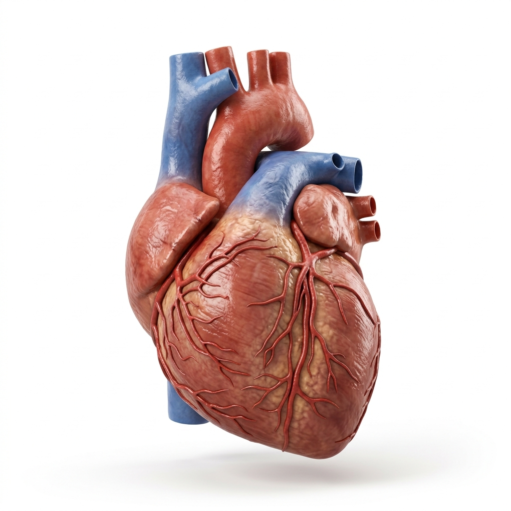
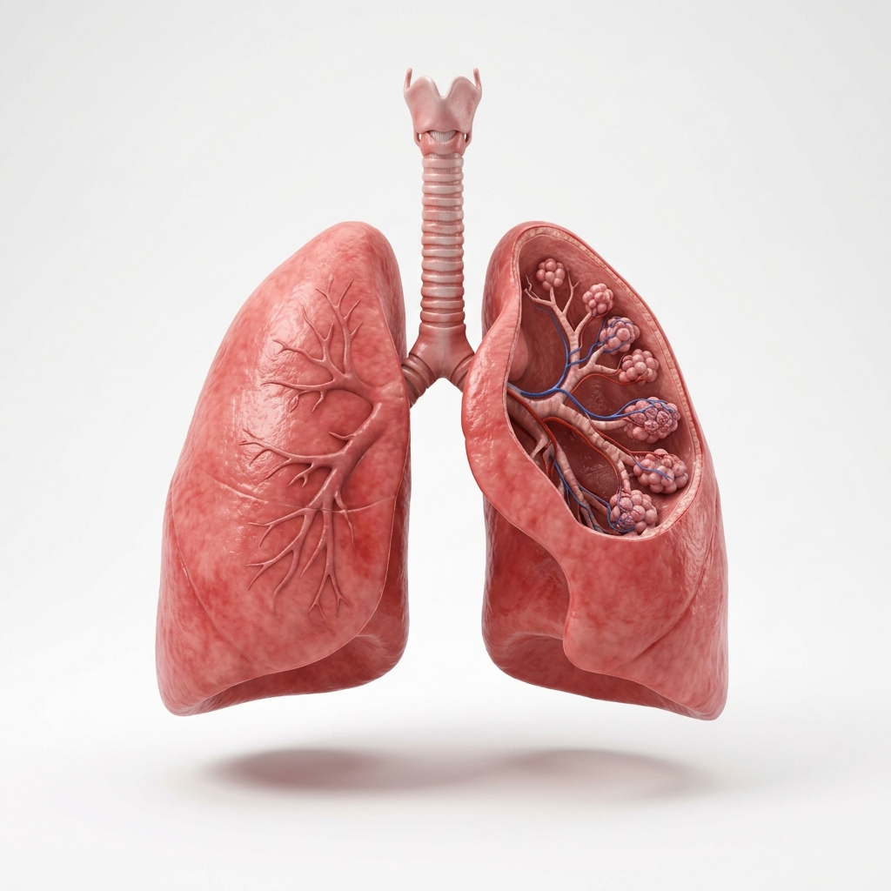
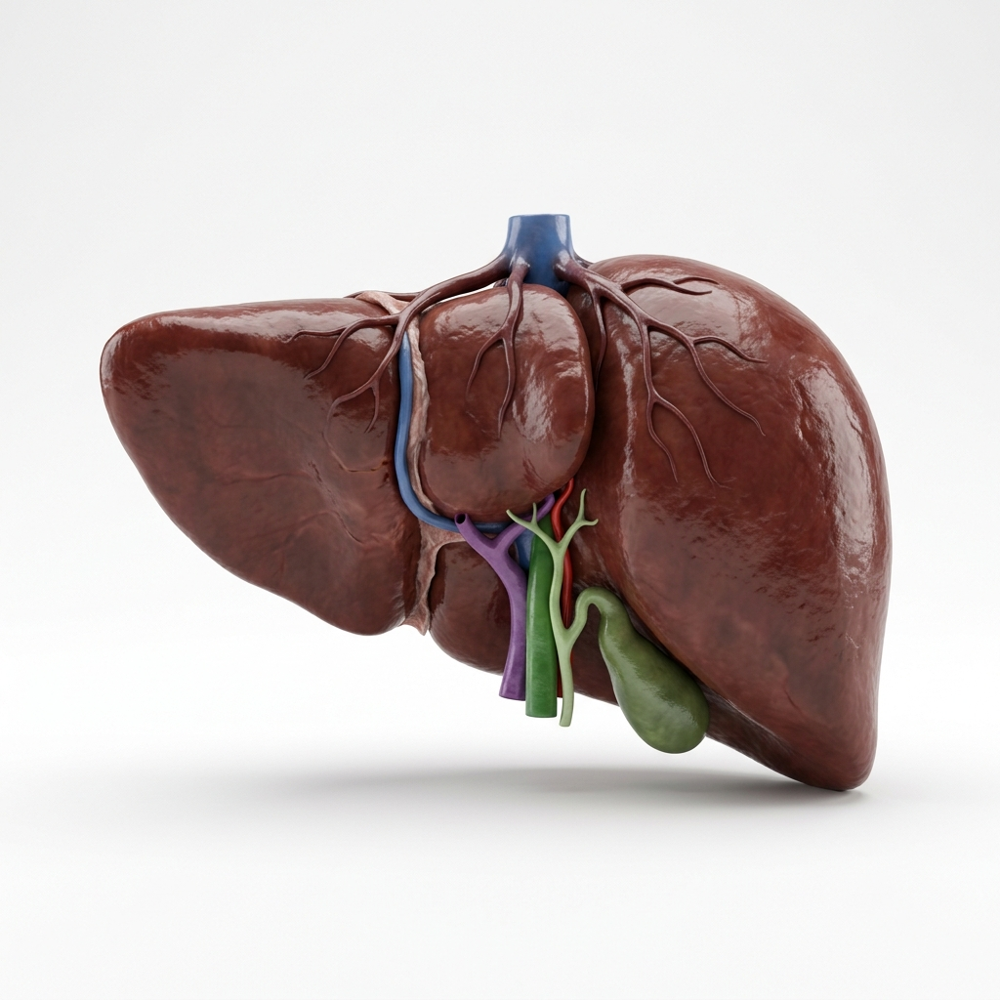
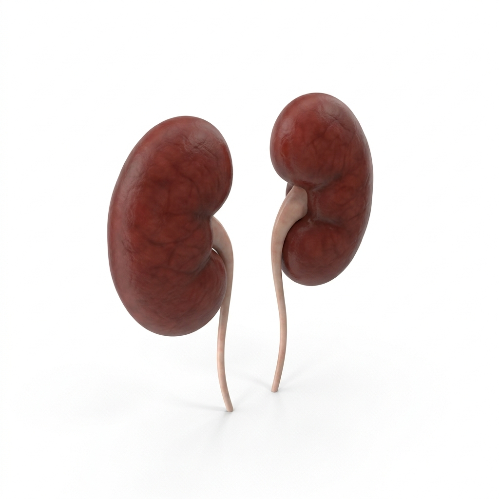
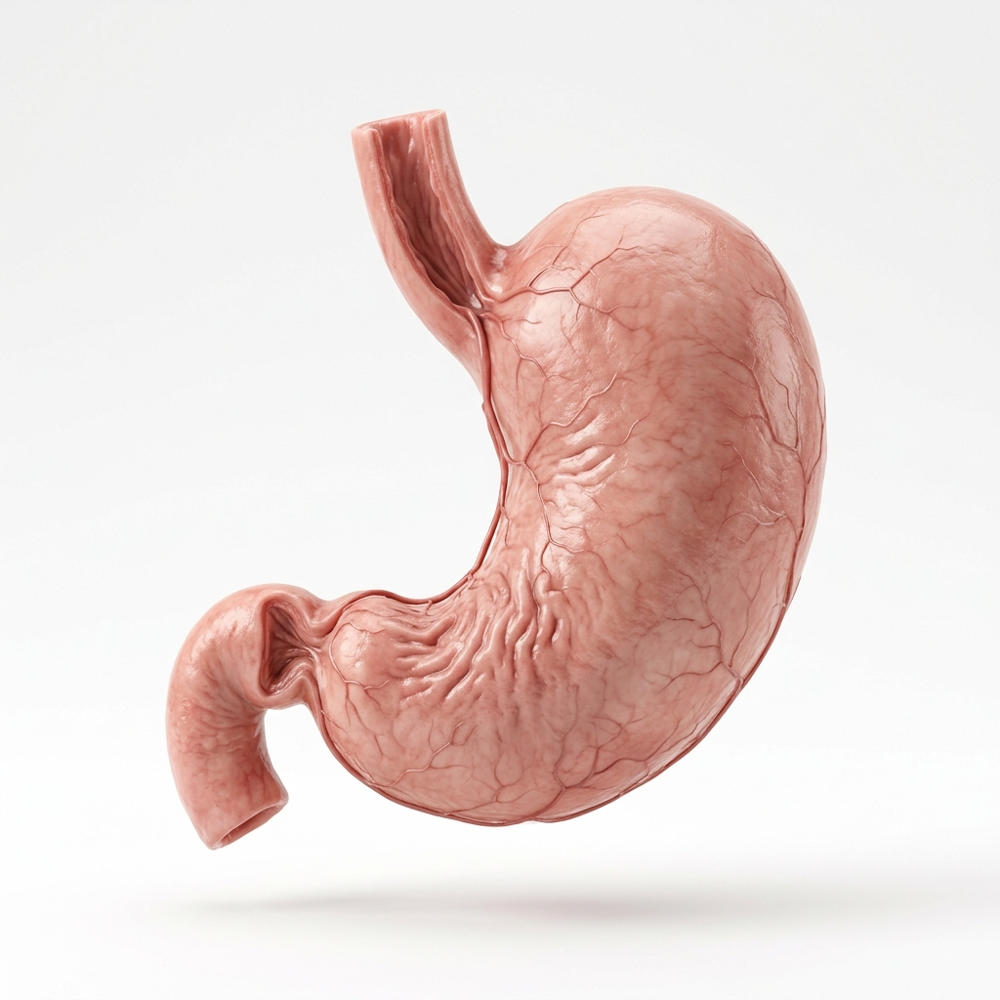

ANATOMIA HUMANA
Descubra a complexidade extraordinária dos órgãos que mantêm a vida. Uma jornada visual pela anatomia que revela a beleza interior do corpo humano.
EXPLORAR ÓRGÃOSSOBRE A JORNADA
O corpo humano abriga órgãos incríveis que trabalham em perfeita sincronia. Cada órgão desempenha uma função vital, e juntos formam o sistema mais sofisticado já criado pela natureza.
Através de visualizações avançadas, revelamos o mundo oculto sob a pele — tornando o invisível visível e o complexo compreensível.

ÓRGÃOS VITAIS
Os órgãos vitais são as estruturas fundamentais que sustentam a vida. Explore cada um deles e descubra suas funções fascinantes.
Bombeia cerca de 7.500 litros de sangue por dia através de 100.000 km de vasos sanguíneos. Bate aproximadamente 100.000 vezes a cada 24 horas.
Centro de comando do corpo, processa bilhões de sinais por segundo. Contém 86 bilhões de neurônios conectados por trilhões de sinapses.

Responsáveis pela troca gasosa vital — captam oxigênio e eliminam dióxido de carbono. Possuem uma superfície interna do tamanho de uma quadra de tênis.

A maior glândula do corpo humano. Realiza mais de 500 funções, incluindo desintoxicação, produção de bile e armazenamento de vitaminas.

Filtram todo o sangue do corpo mais de 30 vezes por dia, removendo toxinas e regulando o equilíbrio de água, sal e minerais.

Um saco muscular que digere alimentos usando ácido clorídrico tão forte que poderia dissolver metal. Renova seu revestimento a cada 3 a 4 dias.
MERGULHE FUNDO
Cada camada do corpo humano revela novas maravilhas. Do mundo microscópico do DNA às macroestruturas que definem nossa forma, há sempre mais a descobrir.
Explore cada órgão em três dimensões
Descubra estruturas ocultas sob a pele
Informações detalhadas de cada sistema
Base de conhecimento completa e atualizada
ENTRE EM CONTATO
Pronto para mergulhar no mundo da anatomia humana? Entre em contato e inicie sua jornada de descobertas.